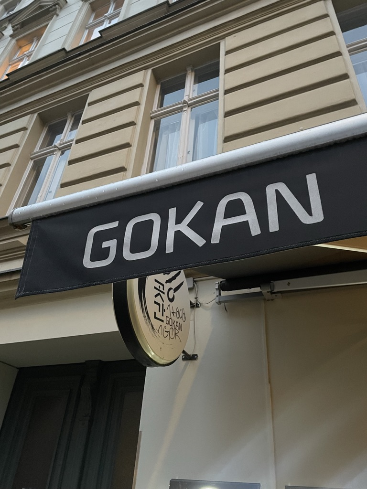
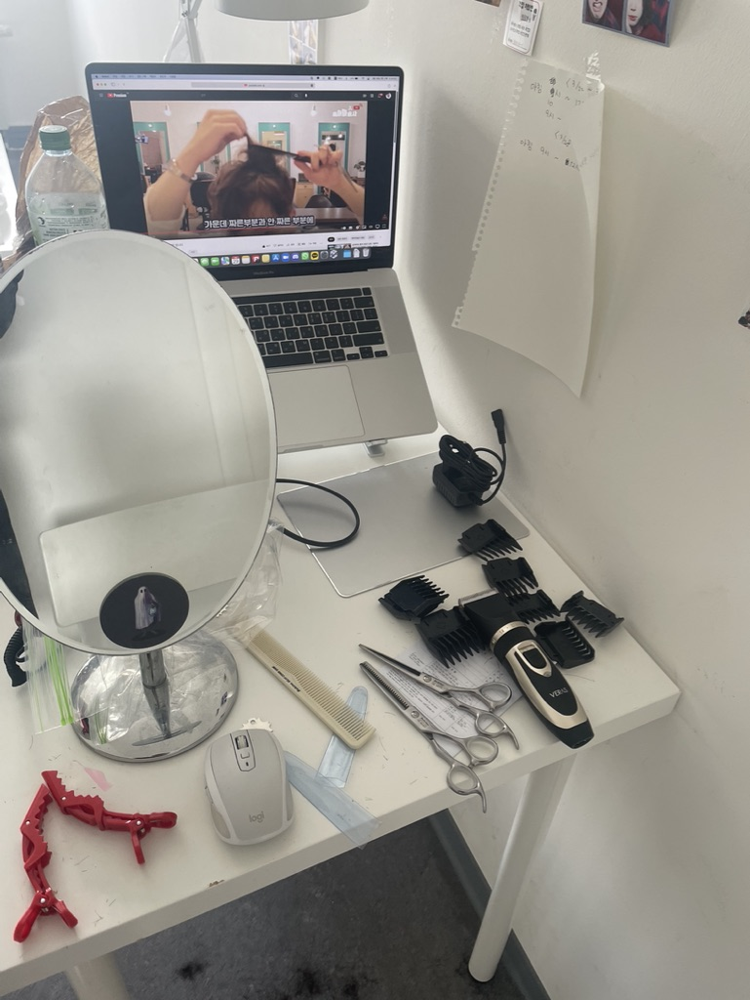
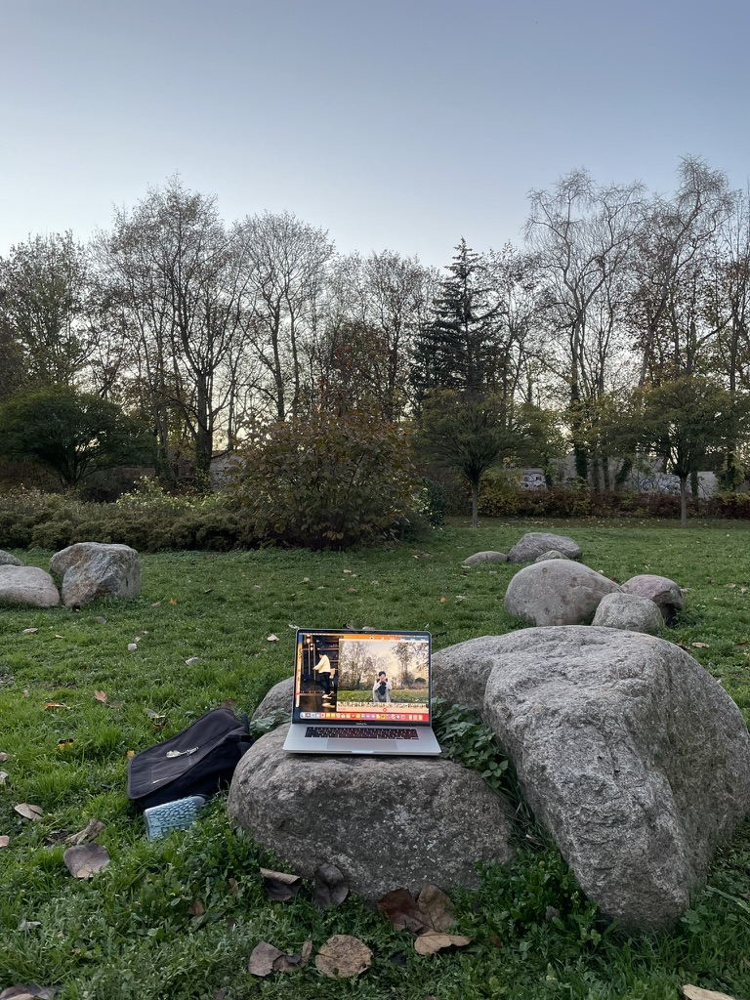

2022년 3월 15일부터 2023년 2월 1일까지
저는 독일 베를린으로 어학연수를 다녀왔어요.
흔히들 가는 교환학생이 아니었기 때문에,
여러분들께 나름 독특한 경험으로 들릴 수 있을 것
같아서 한 번 소개해 보겠습니다.
17년에 입학한 저는 4년간 슬프게도 단 한 과목의 전공도 즐겁게 들어본 기억이 없어요. 제가 생각하던 디자이너는 그림을 그리는 사람이 아니었기 때문이 가장 커요. 그렇게 고통스럽게 매 학기를 무마하던 저는, 복학 후 코로나 학기를 2번 거치면서 학교로부터 2개의 경고를 받게 되었습니다. 이대로는 안 되겠다고 생각이 들어서 해외에서 새로운 전공을 시작하기로 결심했습니다. 독일로 선택한 이유는 학비가 지원되기 때문이었어요. 한 학기 휴학 후 6개월 간 학교 앞 고깃집에서 일하며 그 돈으로 비자 발급과 독일어 학원비를 충당하고, 여유자금을 모았습니다.
보시다시피 저는 새로운 대학 입학 대신 귀국 후 재복학을 선택했기 때문에 앞으로 나올 이야기는 정보소개보다는 생존기에 더 가깝습니다.
독일어는 참 까다로운 아이였어요. 영어랑 비슷하면서도 전혀 다른 게 헷갈리기 딱이었고, 문법이 엄격해 신경 쓸 부분이 많거든요. 그래서 수업이 끝나면 다들 영어로 대화했죠. 하지만 저는 오기와 학구열이 충만했기 때문에 수업이 끝나도 독일어만 쓰려고 했고, 그래서 말은 못하고 답답함만 쌓였던 기억이 나요. 그래도 그때 저는 디자인하던 시절보다는 행복했고, 지금은 독일어를 잘한답니다! 더 자세한 이야기는 https://brunch.co.kr/@hangyeol/16 에서 읽어보실 수 있어요.
해외에 가서 가장 강렬한 기억이 알바일 거라고는 생각하지 못했어요. 미치도록 바쁘고 복잡한 한식 레스토랑이었는데, 음료와 전식, 본식, 바베큐, 후식으로 이루어진 코스요리가 나갔어요. 5번이면 끝나는 수습 기간을 18번을 하고도 매일 일이 끝나면 눈물을 흘리던 그때… 하지만 가족 같던 알바 식구들과 나눈 것이 너무나 많기에 지금은 행복한 기억입니다. 얼마 전에 셰프님께 편지도 부쳤어요.
독일에 가기 전 들었던 소문에 의하면, 머리 커트 한 번에 60유로(9만 원 가량)라고 했어요. 자급자족해야 할 운명을 알고 있던 저는 쿠팡에서 미용실 도구 세트를 5만 원쯤에에 사서 들고 갔어요. 머리 자르는 법 유튜브 영상을 틀어놓고 한 손에는 숱가위, 한 손에는 집게를 들고 영차영차 하며 열심히 잘랐습니다. 지금 보면 결과물이 되게 이상한데, 그때는 참 만족스러웠어요. 사진 찍어서 아렘살롱 디자이너 형에게 자랑하고 그랬거든요. 후에는 친구들 머리도 잘라주었고, 귀국한 지금도 여전히 직접 자르고 있어요.
어릴 때부터 이비인후과를 집처럼 드나들던 제게 유럽 생활은 곤욕이었어요. 비싼 물가 탓에 직접 요리해 먹어야 했기에 영양을 제대로 챙기지 못했고, 날씨는 어제는 18도, 오늘은 38도로 들쑥날쑥했기 때문에 자칫하면 열이 나기 일쑤였어요. 독일 병원에서는 약 처방을 잘 안 해주기 때문에, 제가 혼자 방에서 이불 덮고 끙끙대고 있으면 어학원 외국인 친구들이 와서 요리도 해주고 레몬 꿀차도 타 주면서 많이 도와줬어요. 너무 아플 때는 심적으로 무너질 뻔했는데, 친구들끼리 아플 때마다 서로의 부모 역할을 해주면서 견뎌냈던 것 같아요.
이 글을 읽는 누구라도, 저와 같은 상황이라면 저보다 더 다채로운 여행을 하고 올 거라고 확신해요. 저는 베를린 밖을 거의 벗어나지 않았거든요. 사실 저는 여행이 싫었어요. 특히 혼자 하는 여행이 참 고통스러웠어요. 베를린이랑 뭐가 다른지 느껴지지도 않았고, 하고 싶은 것도 없었거든요. 그래서 대신에 집 주변에서 아무 버스를 타고 종착역에 내려서 산책을 하곤 했어요. 하루는 공동묘지에 도착했던 기억이 나네요. 저에게는 무엇을 보고 하느냐보다, 누구와 시간을 보내느냐만이 중요했던 것 같아요. 때문에 한국에 있는 친구들은 ‘유럽을 그렇게 아깝게 다녀오는 사람이 어디 있느냐’며 놀리곤 했어요.
독일어 자격증을 딴 이후에는 시간이 많이 남아서 생각을 많이 했는데요, 깨달은 것 중 하나가 제게 취미가 없다는 사실이었어요. 그래서 만들었던 여러 취미 중에서 춤을 추었던 게 제일 재미있었어요. 한국에는 재밌는 춤이 들어간 아이돌 노래가 참 많기 때문에 어릴 때부터 자연스럽게 따라 춰보고 싶다고 생각했던 것 같아요. 학교 오티, 엠티 준비할 때나 연습해 보던 춤을 이 낯선 땅에서 혼자 시작하게 된 거죠. 집 앞 공원에 맥북을 들고 나가서, 잔디밭 위 바위에 올려두고 유튜브에서 다운받은 춤 강좌 영상과 0.1배속 한 댄서 영상을 번갈아 보면서 따라 췄어요. 가끔 산책하는 사람들이 말도 걸었어요. 누군가는 제게 소울을 더 담아서 추라며 코칭도 했구요, 틱톡커냐고 묻기도 하고, 같이 춤추고 간 사람들도 있었어요. 공원에서 춤추는 게 전혀 흔한 행동이 아니었는데도 신기하게 시선이 부담되지 않고 편했어요.

쓰고 나니 고통받았던 이야기가 많이 들어있는 것 같아서 읽기 좀 거북하시지 않을까 걱정도 되는데요, 그럼에도 끝까지 읽으신 분들은 제게 말씀해주세요. 저와 더 친해집시다. @hankyuli 남은 웹퍼 수업도 화이팅ㅎㅎ.